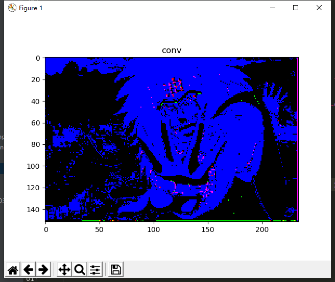

图片尺寸要自己修改。
看起来好像没啥意思，不知道下一步能干什么，先卷了再说。由于weights是随机生成的（tf.random_normal作用：用于从服从指定正太分布的数值中取出随机数），所以每次卷积后的图像会不一样。
代码：
def func19(img_path):
# 读取图片，矩阵化，转换为张量
img_data = cv2.imread(img_path)
img_data = tf.constant(img_data, dtype=tf.float32)
print(img_data.shape)
# 将张量转化为4维
img_data = tf.reshape(img_data, shape=[1, 454, 700, 3])
print(img_data.shape)
# 权重（也叫filter、过滤器）
weights = tf.Variable(tf.random_normal(shape=[2, 2, 3, 3] , dtype=tf.float32))
print(weights.shape)
# 卷积
conv = tf.nn.conv2d(img_data, weights, strides=[1, 3, 3, 1], padding='SAME')
print(conv.shape)
img_conv = tf.reshape(conv, shape=[152, 234, 3])
print(img_conv.shape)
img_conv = tf.nn.relu(img_conv)
with tf.Session() as sess:
# 全局初始化
sess.run(tf.global_variables_initializer())
img_conv = sess.run(img_conv)
plt.title('conv')
plt.imshow(img_conv)
plt.show()
return
if __name__ == '__main__':
img_path = r'你的图片路径'
func19(img_path)
原图（尺寸：(454, 700, 3)）：
效果（尺寸： (152, 234, 3) ）：
